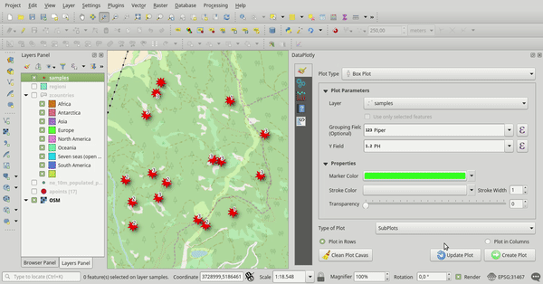
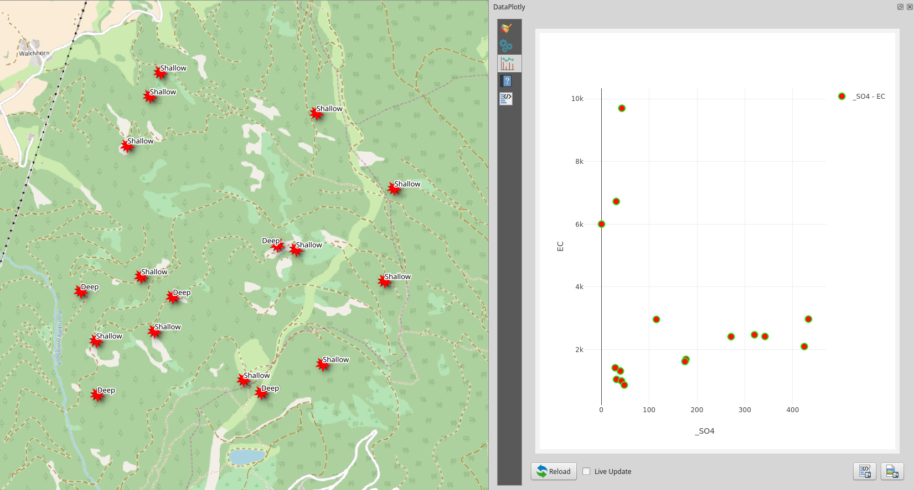
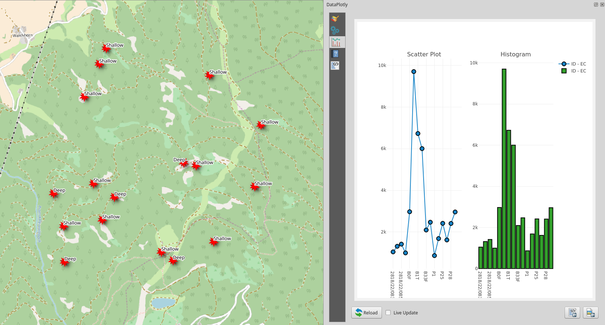

Data Plotly
Data Plotly è un plugin di QGIS sctitto in python che permette la creazione di sofisticati grafici in stile D3 grazie alla libreria Plotly e alle sue API di python.
I grafici sono completamente dinamici in modo che tu possa interagire con il grafico ad esempio ingrandendo/rimpicciolendo oppure ricavando informazioni con il solo passaggio del mouse.
Inoltre, i grafici e la mappa di QGIS sono connessi fra di loro, ovvero puoi selezionare gli elementi del grafico e vedere quali sono gli oggetti corrispondenti sulla mappa:


Grafico e interazione con la mappa
Per ogni grafico sono disponibili tantissime personalizzazioni


semplice esempio di grafico
Con DataPlotly puoi creare molti grafici, anche tipologie di grafici diversi, sovrapporli sullo stesso grafico oppure caricarli in grafici diversi:

tipologie di grafici differenti sovrapposti


tipologie di grafici diversi separati
Ogni grafico ha la sua configurazione e personalizzazione che ti permetteranno di scegliere la migliore soluzione per le tue necessità.
Oltre all’interattività del grafico, i grafici possono essere esportati come immagini png statiche oppure come file html. I file html mantengono l”interattività del grafico.
Infine, il codice del grafico può essere copiato e incollato dovunque tu voglia, per esempio in una cornice html del compositore di stampe di QGIS o in un sito web.
Il codice javascript della libreria Plotly viene salvato nella tua cartella locale del plugin. In questo modo il plugin è utilizzabile anche senza una connessione internet.